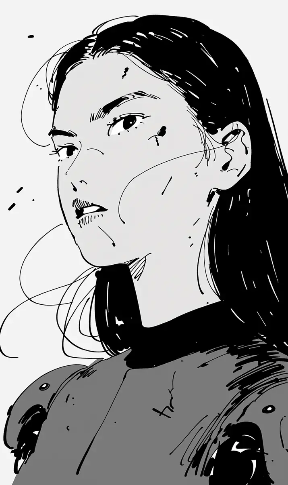

피가 눈으로 흘러내렸다. 도하는 손등으로 피를 닦았지만 손등도 이미 붉었다. 뒤에서 금속이 긁히는 소리가 났고, 그 소리는 천천히, 아주 천천히 가까워졌다. 사냥꾼은 서두르지 않는다. 서두를 이유가 없기 때문이다. 도하는 무너진 벽 뒤로 몸을 숨기고 숨을 참았다. 심장 소리가 너무 컸다. 기계도 사람의 심장 소리를 들을 수 있을까, 그런 생각이 처음으로 들었다.
[Blood ran down into her eye. Doha wiped it away with the back of her hand, but the back of her hand was already red. Behind her, metal scraped, and the sound came closer slowly, very slowly. Hunters do not hurry. They have no reason to. Doha hid behind a collapsed wall and held her breath. Her heartbeat was too loud. Can machines hear a person’s heartbeat too, she wondered for the first time.]
무전기가 지직거렸다. “도하야, 살아 있어?” 서진의 목소리였다. 도하는 아주 작게 대답했다. “아직.” 잠깐 조용해졌다가 서진이 다시 말했다. “정거장 십칠 번으로 와. 셔틀 문 열어 놓을게.”
[The radio crackled. “Doha, are you alive?” It was Seojin’s voice. Doha answered very quietly. “Still.” It went quiet for a moment, then Seojin spoke again. “Come to Station Seventeen. I will leave the shuttle door open.”]
훈련소에서 서진은 항상 숫자를 셌다. 높은 곳에서 뛰어내리기 전에, 문을 열기 전에, 무서운 일을 하기 전에 그는 언제나 이렇게 말했다. “셋, 하나!” 둘은 늘 빼먹었다. 그게 그의 오래된 농담이었고, 도하는 그 농담을 정말 싫어했다. 둘을 빼면 무서운 시간이 더 빨리 지나간다고, 서진은 웃으면서 말하곤 했다. 지금 도하는 그 바보 같은 농담을 다시 듣고 싶었다.
[At the training camp, Seojin always counted numbers. Before jumping from somewhere high, before opening a door, before doing anything frightening, he always said it like this. “Three, one!” He always left out two. That was his old joke, and Doha really hated it. If you leave out two, the frightening part passes faster, he used to say, laughing. Now Doha wanted to hear that stupid joke again.]
사냥꾼이 벽을 부수고 나타났다. 다리가 여섯 개였고 얼굴은 없었다. 도하는 총을 들었다. 남은 에너지는 한 발이었다. 한 발이면 충분해야 했다. 그녀는 기다렸다. 기계가 소리를 찾아 고개를 돌리는 순간, 도하는 방아쇠를 당겼다. 빛이 터지고 뜨거운 공기가 얼굴을 때렸다. 기계는 무릎을 꿇듯이 앞으로 무너졌다.
[A hunter broke through the wall and appeared. It had six legs and no face. Doha raised her rifle. One shot of energy was left. One shot had to be enough. She waited. The moment the machine turned its head toward a sound, Doha pulled the trigger. Light burst and hot air hit her face. The machine collapsed forward as if it were kneeling.]
도하는 웃지 않았다.
[Doha did not smile.]
사냥꾼은 혼자 다니지 않는다. 그것도 훈련소에서 배운 것이었다. 도하는 빈 총을 버리고 뛰기 시작했다.
[Hunters do not travel alone. That was another thing she learned at the camp. Doha threw away the empty rifle and started to run.]
정거장 십칠 번까지는 이 킬로미터였다. 도하는 연기 사이로, 부서진 차들 사이로, 이름을 알 수 없는 검은 잔해 사이로 뛰었다. 피가 다시 눈으로 들어왔지만 이번에는 닦지 않았다. 무전기에서는 서진이 계속 말했다. “거의 다 왔어. 조금만 더.” 그의 목소리는 이상할 만큼 편안했다. “내가 문 앞에 서 있을게.”
[It was two kilometers to Station Seventeen. Doha ran through the smoke, between the broken cars, through black wreckage she could not name. Blood came into her eye again, but this time she did not wipe it away. On the radio, Seojin kept talking. “You are almost here. Just a little more.” His voice was strangely calm. “I will be standing at the door.”]
셔틀이 보였다. 문은 열려 있었고 안에는 불이 켜져 있었다. 엔진 소리도 낮게 들렸다. 그런데 문 앞에는 아무도 없었다.
[She could see the shuttle. The door was open and the lights were on inside. She could hear the low sound of the engine too. But there was no one at the door.]
도하는 멈췄다.
[Doha stopped.]
“서진아, 어디야?” “여기, 안에 있어. 빨리 들어와.” 도하는 한 발 앞으로 나갔다. 무전기 안에서 서진이 웃었다. “셋, 둘, 하나.” 도하의 손이 멈췄다. 서진은 둘을 세지 않는다. 한 번도 센 적이 없었다.
[”Seojin, where are you?” “Here, I am inside. Come in quickly.” Doha took one step forward. Inside the radio, Seojin laughed. “Three, two, one.” Doha’s hand stopped. Seojin does not count two. Not once, never.]
서진은 사흘 전에 죽었다. 도하는 이제야 그것을 알았다. 사냥꾼은 사람의 목소리를 가져가고, 그 목소리로 사람을 문 앞까지 부른다.
[Seojin died three days ago. Only now did Doha understand it. Hunters take a person’s voice, and with that voice they call people to the door.]
도하는 천천히 뒤로 한 걸음 물러났다. 셔틀 안의 불빛이 그녀의 얼굴 위 피를 붉게 비췄다. 무전기가 다시 지직거렸다. 이번에는 소리가 무전기에서 나오지 않았다. 소리는 그녀의 바로 뒤에서 났다.
[Doha slowly stepped back. The light from inside the shuttle lit the blood on her face red. The radio crackled again. This time the sound did not come from the radio. It came from directly behind her.]
도하는 천천히 고개를 돌렸다.
[Doha slowly turned her head.]
“셋, 하나.”
[”Three, one.”]